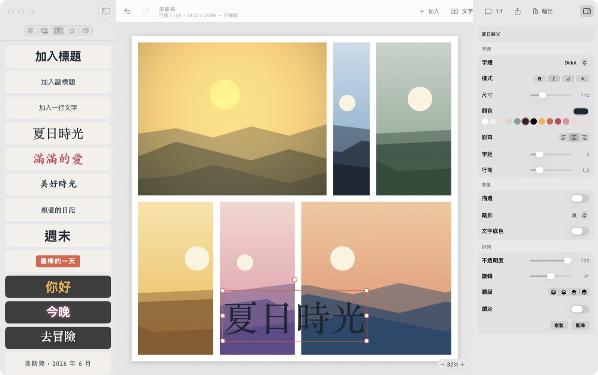

Mosaikk
親手拼出的照片拼貼。
從 200 多個佈局中選一個，放入照片，拖移照片之間的邊框，直到看起來剛剛好。加上文字、貼紙和背景，在你的 Mac 上輸出任意尺寸的圖片。Mosaikk 是挪威語「馬賽克」的意思。
平台macOS 14 或以上版本
價格免費，Apache 2.0
網路完全不連網
語言EN, 简体, 繁體

它能做什麼
- 佈局1 到 25 張照片的格線、主圖佈局和馬賽克，帶形狀的相框，還有像散放照片一樣的自由排列。
- 拖移邊框拖移格子之間的線來調整大小。可以分割、刪除或加入格子，也能一鍵讓它們等大。
- 每張照片拖移選擇裁切範圍，縮放、旋轉、翻轉；拖到另一個格子上就能交換。16 種濾鏡和 12 項調整。
- 文字和貼紙Mac 上的任何字體，帶描邊、陰影、發光和底色，直接在拼貼上輸入。還有形狀、徽章和表情符號。
- 任意尺寸純色、漸層、圖樣或模糊照片做背景。社群媒體、列印和自訂尺寸；輸出 PNG、JPEG 或 HEIC。
取得 Mosaikk
免費。經過簽署和公證的下載版在 GitHub 上；打開磁碟映像檔，把 Mosaikk 拖到「應用程式」即可。即將登上 Mac App Store。